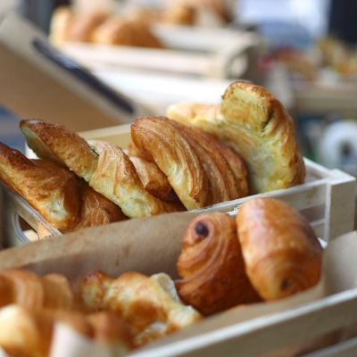
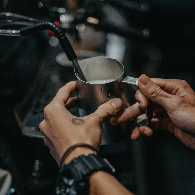

Breads
The key ingredient of our breads is "time", bringing out a quality and flavour in our breads that we are proud of. Other ingredients are carefully sourced, organic and kept to a minimum as to merely enhance the bread's flavour rather than overshadow it. Long fermentation is the key to better flavours, keepability and digestability.

Pastries
All of our pastries are hand-made, in a time-honoured way that requires great skill & experience to master. Most of our pastries are made from our signature croissant dough, incorporating layers and layers of organic Irish butter. Choose from Croissants, Pain au Chocolats, Danishes, Cruffins and more.

Coffee
There are few things worse than a bad coffee: that's why we're very particular about ours. We brew with pride, using high quality machines and fresh beans sourced from Calendar Coffee in Co. Galway. Whichever coffee you fancy, hot or cold, espresso, filter or Aeropress - be assured you're getting a memorable one.
